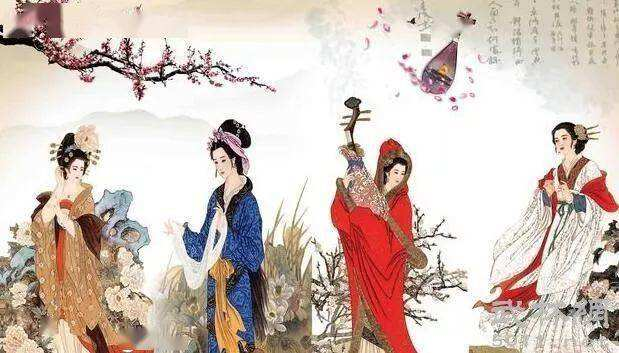
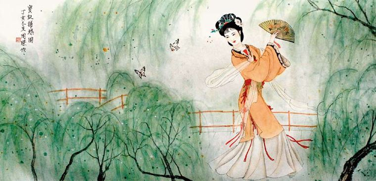
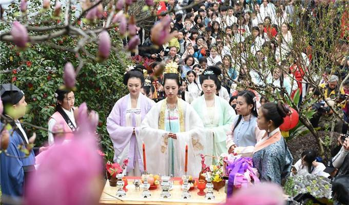
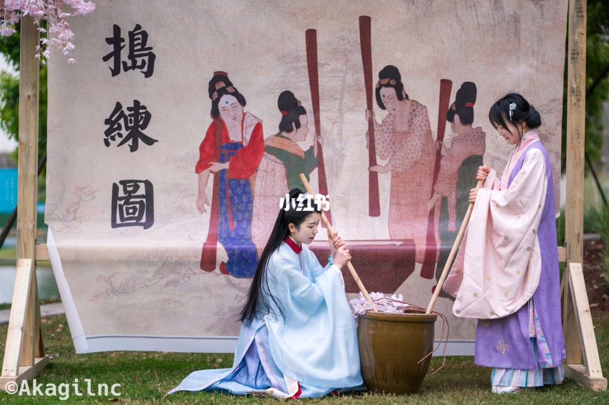

花朝的节物风俗
祝神庙会
传说花神专管植物的春长夏养，所以，祀奉她的就不仅仅限于花农了，还包括耕种庄稼果蔬的农人。长江三角洲一带多有花神庙，旧时吴越花农家还常供奉着花神的塑像。二月初二花神生辰，许多地方，不少农人都要聚集于花神庙内设供，以祝神禧，东北一带还讲究用素馔来供奉。有的地方还要演戏娱神，通常是由十二伶优分扮每年十二越的各月花神故事。由朱熹的诗，也可以看出人们对花神的感情。人们纷至沓来，就此形成庙会。这天夜里，要提举各种形状的“花神灯”，在花神庙附近巡游，以延伸娱神活动。

游春扑蝶
古时，每逢花朝，文人雅士邀三五知己，赏花之余，饮酒作乐，互相唱和，高吟竟日。纵观二三月间的传统佳节会发现，这一时期会有一系列游春的节日——春节拉开了迎春的序幕，花朝节前后构成游春的高潮。撰有名剧《桃花扇》的孔尚任，也曾写有竹枝词形容花朝踏青归来的盛况：“千里仙乡变醉乡，参差城阙掩斜阳。雕鞍绣辔争门入，带得红尘扑鼻香。”
宋时开封一带的花朝曾流行“扑蝶会”，是当时民间颇有趣味的游艺活动。

种花挑菜
这一天，各地还有栽花种树的习俗，有点今天植树节的味道了；挑菜，就是挖野菜——白蒿、荠菜正是鲜嫩的时候。“采薇采薇，薇亦柔止……”
晒种祈丰
花朝吉日，正值芳菲酝酿之际，家家摊晒各类种子，据说要凑其“百样种子”，以祈丰收。预卜的方法很简单：是日忌雨，晴则带来百物丰熟的吉兆。

制作花糕
唐代的节日文化与饮食文化都十分发达。据传武则天嗜花，每到夏历二月十五花朝节这一天，她总要令宫女采集百花，和米一起捣碎，蒸制成糕，用花糕来赏赐群臣。这种糕有着花瓣的馥郁和谷物的芬芳，很快就上行下效，宫廷坊上一时分外流行。

版权所有219333420639-Ryan